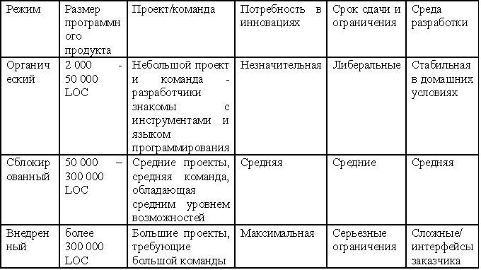

Регрессионная модель СОСОМО
Модель конструктивных затрат (Constructive COst Model, СОСОМО) относится к числу наиболее широко применяемых технологий оценивания. Основанная на использовании регрессии модель была разработана доктором Барри В. Боэмом (Dr. Barry W. Boehm) в начале 1970 годов. В то время Барри работал в фирме TRW. Он начал с анализа 63 программных проектов различных типов. При этом оценивался фактический размер (показатель LOC), понесенные трудозатраты, а также фактическую длительность разработки ПО. Регрессионный анализ используется на этапе разработки экспоненциальных уравнений, которые лучше всего описывают связь между разбросанными точками данных.
Режимы модели СОСОМО
В модели СОСОМО используются три режима, с помощью которых классифицируется сложность системы, а также среды разработки (см.таблицу рис.17.1).
Органический режим обычно классифицируется как платежная ведомость, опись либо научное вычисление. Другие характеристики режима: небольшая команда по разработке проекта, требуются небольшие нововведения, имеются нестрогие ограничения и конечные сроки, а среда разработки является стабильной.
Сблокированный режим типизируется прикладными системами, например, компиляторами, системами баз данных либо редакторами. Другие характеристики: небольшая команда по разработке проекта среднего размера, требуются некоторые инновации, умеренные ограничения и конечные сроки, а среда разработки немного нестабильна.
Внедренный режим характеризуется режимами реального времени, например, системами контроля воздушного движения, сетями ATM или военными системами. Другие характеристики: большая команда разработчиков проекта, большой объем требуемых инноваций, жесткие ограничения и сроки сдачи. Среда разработки в этом случае состоит из многих сложных интерфейсов, включая те из них, которые поставляются заказчикам вместе с аппаратным обеспечением.

Рисунок 17.1 - Характеристики режимов СОСОМО
Уровни модели СОСОМО
Три уровня детализации обеспечивают пользователю последовательное повышение степени точности на каждом последующем уровне.
Базовый уровень. На этом уровне для определения необходимых трудозатрат и графика используется лишь значение размера и сведения о текущем режиме. Он пригоден при выполнении быстрых и приближенных оценок при выполнении небольших и средних по объему проектов.
Промежуточный уровень. На этом уровне применяются сведения о размере, режиме и 15 дополнительных переменных с целью определения необходимых трудозатрат. Дополнительные переменные называются "драйверами затрат" и имеют отношение к атрибутам продукта, персонала, компьютера и проекта, которые могут являться результатом более ли менее значительных трудозатрат.
Драйвер затрат или Фактор формирования затрат - причина, определяющая изменение величины затрат. Фактор затрат должен быть измеримым, т.е. поддаваться количественному определению. Факторами прямых затрат являются объекты, на единицу которых выделяются бюджетные средства
Произведение драйверов затрат называется корректировочным множителем среды (Environmental adjustment factor, EAF).
Детализированный уровень. Этот уровень надстраивается на промежуточном уровне СОСОМО путем внедрения дополнительных множителей трудозатрат, чувствительных к фазе, и трехуровневой иерархии программных продуктов. Промежуточный уровень может быть настроен по фазе и по уровню разработки продукта с целью достижения детализированного уровня. В качестве примера множителей трудозатрат, чувствительных к фазе, можно рассматривать ограничения по памяти, которые могут применяться при попытках оценивания фаз кодирования или тестирования проекта. Однако в то же самое время показатели размера памяти могут не оказывать влияния на величину затрат либо трудозатрат на фазе анализа. Это становится еще более очевидным после описания множителей трудозатрат (либо драйверов затрат).
Множители, чувствительные к фазе, обычно резервируются для использования зрелыми организациями и требуют применения автоматизированных инструментов.
Трехуровневая иерархия программных продуктов состоит из системы, подсистемы и модуля, подобно тому, как реализовано расположение в структуре WBS. Большие проекты могут разбиваться, как минимум, на три уровня.